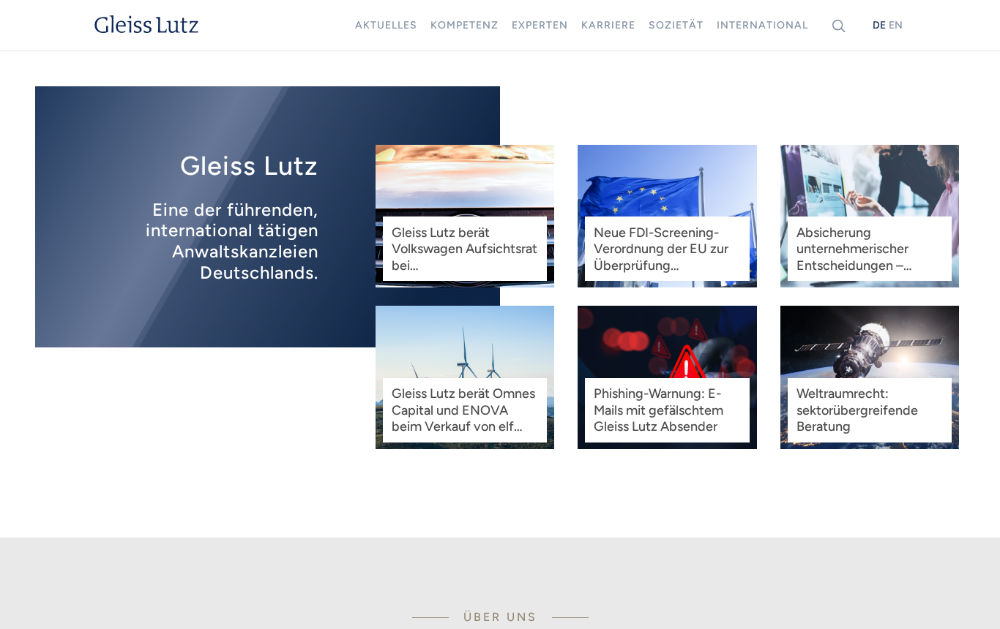
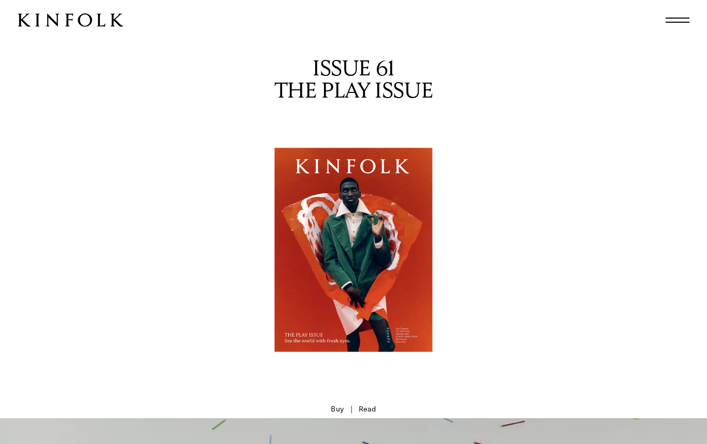
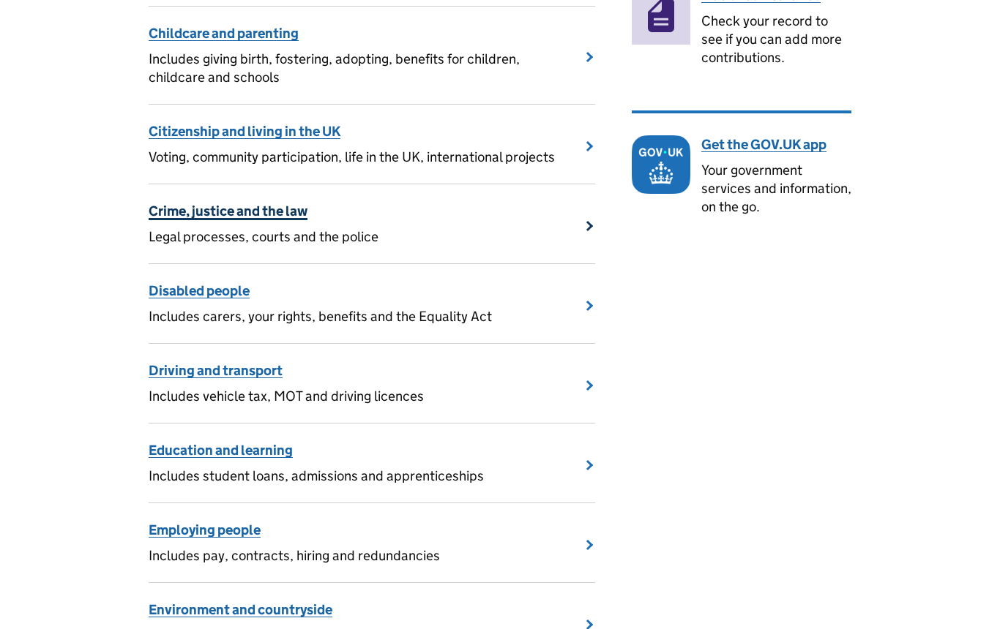
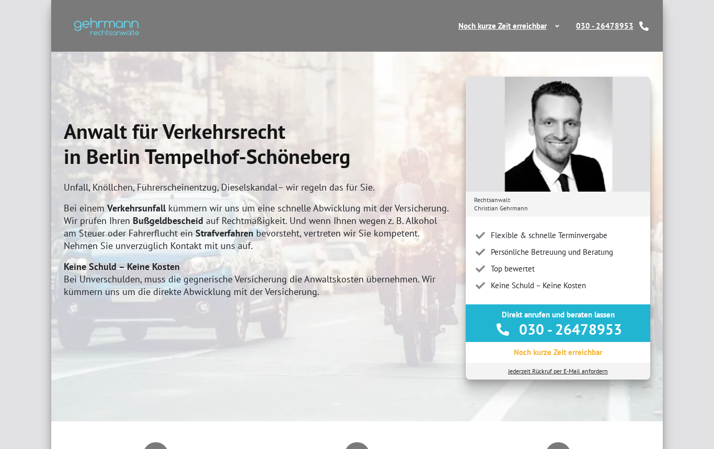

Rechtsanwälte Kaiser: Vorbilder und Farbwelten
Phase 2. Oben vier Vorbilder, jeweils mit dem, was wir übernehmen, und dem, was wir weglassen. Darunter drei mögliche Welten für die neue Seite. Alle Farbpaare erfüllen die Kontrastregeln für gute Lesbarkeit (WCAG AA). Gezeigt werden nur Stimmungen. Die echten Entwürfe kommen in Phase 4, mit euren Texten.
Vorbilder

SeriositätGleiss Lutz
- Ruhiger Serifen-Schriftzug, viel Weiß, Navigation in feinen Versalien
- Ein Dunkelblau als einzige starke Farbe
- Stockfotos, Kachel-Raster mit News, Großkanzlei-Ton

WärmeKinfolk (Magazin)
- Großzügiger Weißraum, ruhige Serifenschrift, Seiten wie aus Papier
- Wirkt menschlich, ohne verspielt zu sein. Passt zur Mediation.
- Mode-Fotografie, Hamburger-Menü am Desktop

KlarheitGOV.UK
- Themen als Liste mit Titel, einem Satz und Pfeil. Ideal für acht Rechtsgebiete.
- Große Schrift, starke Kontraste, unterstrichene Links. Gut für ältere Besucher und Menschen unter Stress.
- Behördenblau als Vollfläche, kein Gesicht

AnfrageGehrmann (Wettbewerber)
- Nur der Aufbau: Kontaktkarte mit Foto, großer Telefonnummer und Rückruf direkt im ersten Bildschirm
- Kostenangst früh nehmen
- Optik: graue Kopfleiste, Stockfoto, Häkchen-Liste
Bewusst nicht gewählt: Noerr und Mishcon de Reya (laut, Konzern-Look, Cinematic-Effekte).
Drei Farb- und Schriftwelten
Kaiser & KaiserRechtsanwälte · Mediation
Rechtsanwälte in Berlin-Mariendorf. Seit 1984.
Verkehrsunfall, Kündigung, Trennung: Wir vertreten Sie vor Gericht oder finden mit Ihnen eine Einigung.
- Verkehrsunfall →
- Familienrecht →
- Mediation →
#1B2A4A
Tinte
#8A6A3B
Messing
#F7F5F0
Papier
A · Klassisch modernSource Serif + Source Sans. Das bekannte Blau, aber tiefer und ruhiger, mit Messing als Akzent. Am nächsten an der alten Seite, seriös und sicher. Kontrast Text 13,1 · Akzent 4,6 · Button 14,2.
Kaiser & KaiserRechtsanwälte · Mediation
Recht bekommen. Oder eine Lösung finden.
Zwei Anwälte in Berlin-Mariendorf, seit 1984. Mit eigener Praxis für Mediation.
- Verkehrsunfall →
- Familienrecht →
- Mediation →
#1F4E4A
Petrol
#A4482A
Terrakotta
#F4EFE6
Leinen
B · Warm und menschlichLiterata + Public Sans. Petrol und Leinen statt Behördenblau, Terrakotta als Akzent. Trägt die Mediation am besten und hebt sich am deutlichsten von allen Kanzleien in der Umgebung ab. Kontrast Text 11,9 · Akzent 5,2 · Button 9,3.
Kaiser & KaiserRechtsanwälte · Mediation
Anwälte in Berlin-Mariendorf
Wir helfen bei Verkehrsunfall, Bußgeld, Familie, Arbeit, Miete und Bau. Und mit Mediation, wenn Sie sich einigen wollen.
- Verkehrsunfall →
- Familienrecht →
- Mediation →
#1A1A1A
Graphit
#0B5CAD
Klarblau
#FFFFFF
Weiß
C · Klar und barrierearmAtkinson Hyperlegible, eine Schrift, die für schlecht Sehende entwickelt wurde. Schwarz auf Weiß, ein klares Blau. Am besten lesbar, aber am wenigsten eigen. Kontrast Text 17,4 · Akzent 6,7 · Button 6,7.
Meine Empfehlung: B als Grundwelt, dazu die Klarheit von C bei Listen und Schriftgröße. Die Wärme passt zu einer Kanzlei mit Mediation, sie hebt sich vom Blau aller Wettbewerber ab und wirkt trotzdem seriös. Den Aufbau des ersten Bildschirms (Foto, Telefon, Rückruf) übernehmen wir von Gehrmann. Der Schriftzug „Kaiser & Kaiser“ ist hier nur gesetzt. Gestaltet wird er in Phase 4.